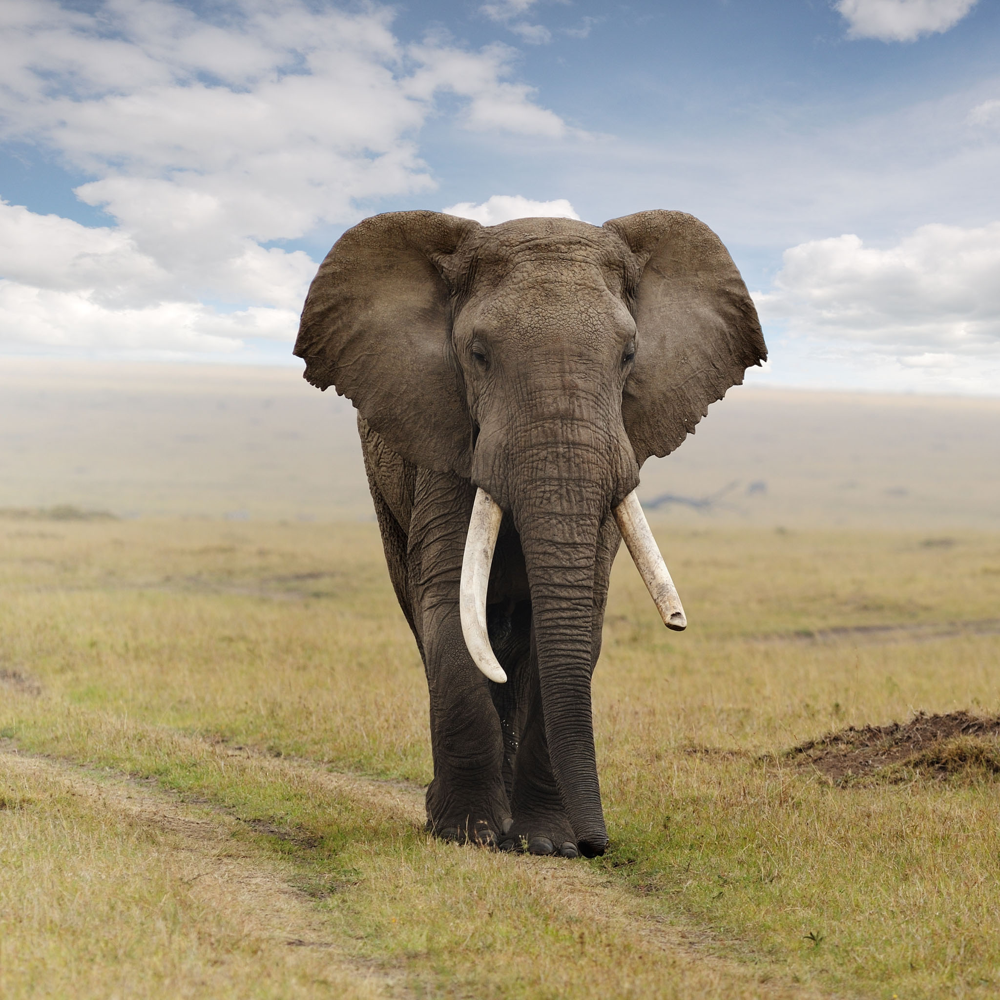
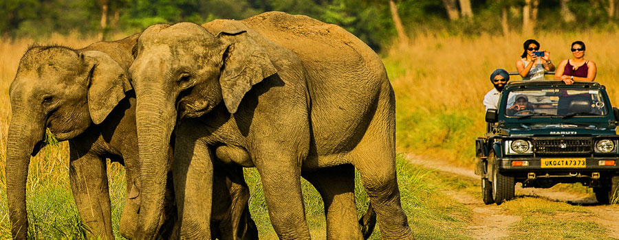
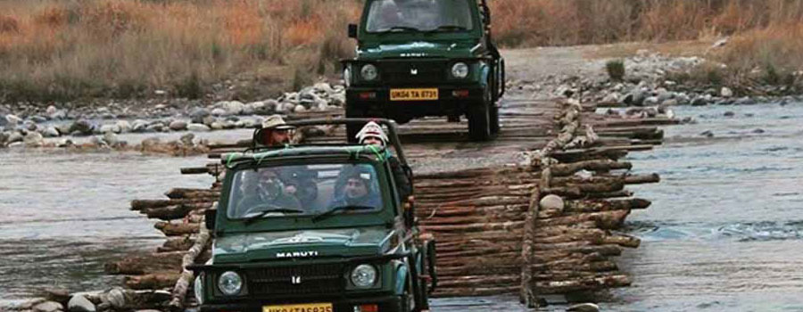

Jim Corbett National Park
The Jim Corbett National Park is a part of the largest Corbett Tiger Reserve; the Project Tiger lies in the Nainital district of Uttarakhand. The Majestic landscape of Corbett is well-known for its tiger richness. Established in the year 1936 as Hailey National Park, Corbett has the glory of being India’s oldest and most prestigious National Park. It is also being honoured as the place where Project Tiger was first launched in the year 1973. This Unique tiger territory is best known as the father who gave birth to Project Tiger in India to safeguard the most endangered species and the Royal wild animal of India called Tigers.
About dhikala
Dhikala is one of the most popular sought after tourist accommodation in Corbett Tiger Reserve. Herd of elephants and spotted deers pack the vast expanse of famous Dhikala Chaur. This is probably the best place in the Tiger Reserve to spot very rare Hog Deer. Staying at Dhikala is an experience every wildlife enthusiast looks forward to. Dhangari gate is entrance for Dhikala zone. Dhangari gate is located 18 kms away from Ramnagar while Dhikala Tourist Complex is located 31 Kms inside the Dhangari Gate. Dhikala is open for tourists from 15th November to 15th June. But remains inaccessible during Monsoon season. Dhikala tourist complex overlooks Ramganga Reservoir and is a perfect place to observe Crocodiles and Gharials basking in the banks of Ramganga.
A night stay at the lodge over the Dhikala Tour is highly recommended for the hardcore wildlife enthusiasts. The best part about staying the lodge is its journey from the Dhangadi gate during which
About Bijrani
Bijrani Range is located close to Amdanda Gate anear Ramnagar. Visitors can have higher probablity of tiger sighting during Bijrani Safari. Wildlife, grasslands and dense, deep forest with stormy drains are major attraction of Bijrani wildlife zone.
Accommodation inside Bijrani Zone
With in Bijrani Zone, Forest rest houses are located in Bijrani and Malani. The rest house at Bijrani has six rooms (Four with double beds and two with single bed) and dormitory consisting of four beds. The compound has its own restaurant and canteen. Elephant rides into the jungle are available from here. The region is frequented by wild animals and birds unperturbed by the human interventions. The chances of spotting a tiger, Sloth bear and herd of elephants are quite high in this part of the park. The rest house in Malani has two rooms (Double bed) and is very popular among bird watchers and tourist seeking a peaceful place. The picturesque beauty of Birjani is magnificent. It is endowed with wide grass lands, thick forests and huge water drains and inspiring count of flora and fauna.
Safari In Bijrani
Bijrani safari zone is highly endowed with rich diversity of flora and fauna. Bijrani zone, situated at a suitable distance from Ramnagar is the most preferred zone for Wildlife enthusiasts visiting the park for day visit. It gives its visitors a wonderful experience of the beautiful forests.
Food & Other Services :
The compound has its own restaurant and canteen, where buffet meals are served with a variety of good quality food at affordable price.
About Garjiya
Tourist visiting Corbett National Park will not have to be disappointed due to the safari seat not available or booking being full. In view of the increasing trend of tourists, the new Ringora Zone or Garjia safari zone in Corbett now started for safari from November. Girija is new safari zone being added which is now available for tourists for enjoying safari. So far tourism safari zone in Corbett National Park include Bijrani, Jhirna, Dhela, Durgadevi, Sitabani and Pakhro. Being a limited safari seats, the Corbett administration has opened the Girija tourism zone for tourists. During peak tourism season many wildlife lovers get disappointed as they do not get chance to enjoy safari. However, the practice of opening new zone was pending for a long time.
Jeep Safari In Garjia Corbett :
Garjia Safari zone (Ringora Safari Zone) in Corbett is highly bestowed with rich diversity of flora and fauna. Garjia is located at a suitable distance (9 Km ) from Ramnagar city is the most preferred zone for wildlife lovers. Garjia has rich population of Royal Bengal Tigers and offers a wonderful sighting to its visitors. Amdanda gate is the entrance to this zone and it consists of buffer, tourism and core areas. In one shift limited number of vehicles allowed to enter so that the natural habitats of wildlife do not get disturbed. If you wish you can enjoy Jeep safari for the full day to catch greater number of wildlife of Corbett Park. Garjia and Malani forest rest house are two wonderful loading options in the Garjia zone, where you can experience a comfortable stay. Visiting hours for morning and evening slots are as follows:
About Sitabani
Sitabani forest zone of Corbett Park is called landscape area which is best known for nature walks and visiting popular attractions around. Though Sitabani is hard forest area and not under the Corbett Tiger Reserve therefore the rules and regulations of CTR is not applied in this zone. Sitabani area has become favourite spot for tourists walking because of its elaboration in the Hindu Epic Ramayana. The epic says that wife of Lord Rama - goddess Sita spent some days of her exile in Sitabani jungle. The entire jungle is protected and supervised by the Archaeological Survey of India (ASI). Sitabani tourism zone is open all round the year for safari tours and there is no limit of gypsies entering in the area. Corbett Tiger Reserve Authority does not offer any kind of permit for the entry in to this zone. Instead, Sitabani Forest Department gives the permission for jeep safari in this region. It has also a popular old temple which is dedicated to Lord Shiva. There are shallow streamlets flowing through the Sitabani, which offer enjoyable retreats to the tourists passing by.
Best time to visit Sitabani area : Though Sitabani zone can be visited throughout the year but the best time to visit throughout the year.
About Dhela
The Dhela Safari Zone sprawl over 1173 hectares is the sixth ecotourism zone of Corbett Tiger reserve that was kept on CTR tourism map in the year 2014. It was crafted out of the southern buffer forests part of the Corbett. A forest of Dhela has the distinction of seeing seven tigers once in Corbett’s seventy five years of history. This forest has mixed forest plantation and moist deciduous shelters various species of wildlife including Sambhar Deer that attracts tigers as they get easy hunt. It is also true fact that Sal forests area is favourite area for tiger hunting their prey. Watch Tower built inside the Dhela Zone help tourists to see wild animals from far away. Dhela has 46 kilometres of Jungle Path where you can spot varied wildlife species. Travellers can enjoy Jeep Safari in morning as well as in evening shift. In a shift only 15 gypsies are allowed to enter inside the zone. Dhela is particularly known for bird watching. Dhela remains open throughout the year.